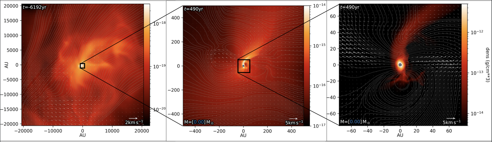

Currently available project for students
Prospective students should see the Research School of Astronomy & Astrophysics study page for details on how to apply to study with me. I work with my students to build a project that aligns with their strengths and interests!
Title: Accretion streams and asymmetric perturbations: How does non-isotropic accretion impact protoplanetary disc fragmentation and chemistry
Description: Most stars are born in clusters, and many stars are born with companions. Recent observations of young stars are finding more evidence of stellar interactions and accretion streams perturbing their protoplanetary discs, potentially leading to accretion bursts, disc truncation, and fragmentation. In this project, the student will use 3D magnetohydrodynamical simulations to model accretion streams impacting a protoplanetary disc around a young star to study how the disc responds. There is ample opportunity to expand the project by adding more physics or testing various accretion stream parameters.
The figure below demonstrates using the Resimulate Method to get realistic initial conditions on a smaller star forming core from a larger cluster scale simulation. The system formed from this region turns out to be a single star that is being fed by a stong accretion stream.

Title: Binary and multiple star dynamics and interactions
Description: Most stars are born in multiple star systems that interact dynamically and disintegrate while accreting from their star-forming clouds. This work builds on the treasure of sink particle data produced from my 2023 paper to further investigate 1. the pathways for hardening binaries, and 2. finding systems of interest to study in detail how the interactions between stars and the environment affect the accretion history of the stars.
The video below shows a binary that was zoomed-in on with the Zoom-in Method from the cluster simulations. We see that in this binary, the seconday companion shows strong accretion suppression near periastron.
Previous students I have co/supervised
Mikkel Bregning Christensen